今年のブーケとビールと梅吉 [梅吉]
最近は短時間ですがベランダ活動を楽しんでいる梅吉さん。
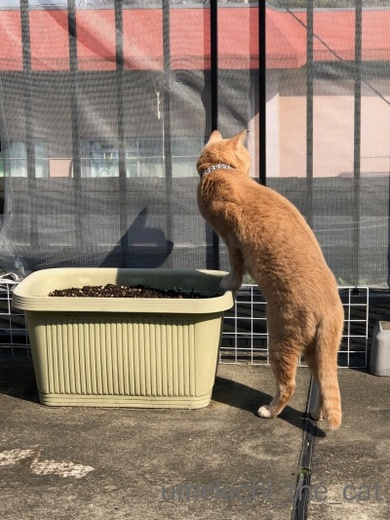
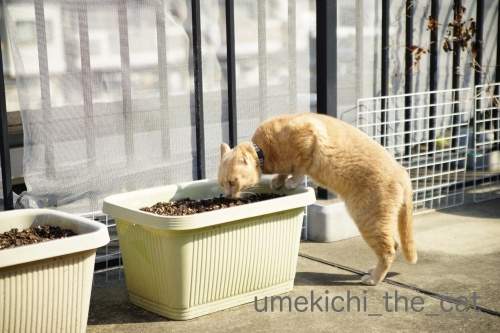
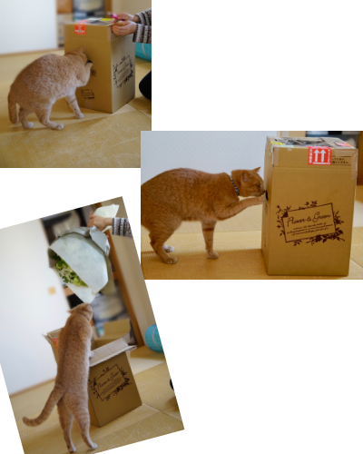
これは なんやー！なんなんやーー！！
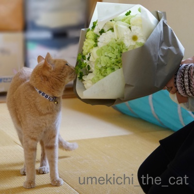
結婚記念日が近いのでおとーさんが家族みんなにってブーケを買ってくれましたよ＾＾
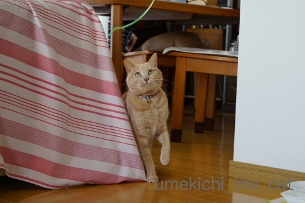
梅吉さんにも素敵なプレゼントが！
ブーケを縛ってたヒモです！高級品！！
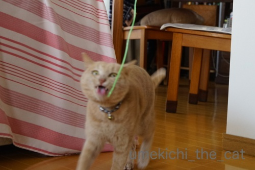
ぶれっぶれだけどイイ表情してます0(≧▽≦)0
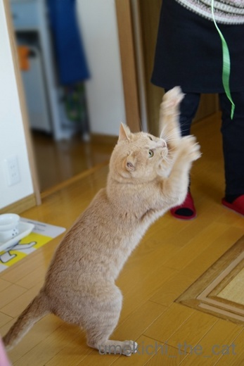
立ち上がってねこぱんちの連打w
臨場感をお楽しみください＾＾
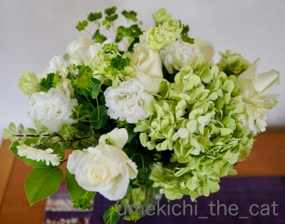
ブーケの全体像です。
この配色大好きなんです(≧▽≦)
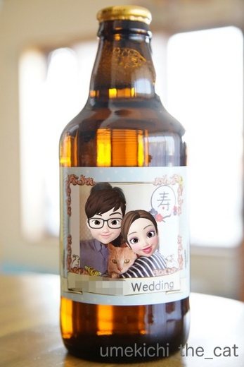
毎年オーダーしているビールはこんなデザインになりました。
ブログアップ用にZEPETOの絵文字を利用して貼り付けてみましたよ。
おっとのアバターは私の顔を男性バージョンにしたものです。
でもなんか似てるんですよねーw
私がちぃママなのはご愛嬌(〃▽〃)
あ、ビールの実物はアバター加工してない普通の写真です＾＾
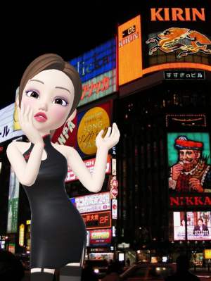
みなさん こんばんは。わたし、ちぃママよ。
最近大きな出来事があったので聞いて欲しいの。我が一族に関する秘密も・・・
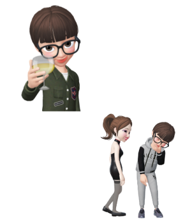
彼女はお店の常連さん。みんな「くーさん」って呼んでるわ。
どこかの研究所でメカニック的なお仕事をしているらしいんだけど
はっきり聞いたわけではないわ。私のカン。
お客様の公の立場は詮索しない立ち入らない判っても公言しない、これが私のルールよ。
いまお店は事情があって閉めてるんだけどくーさんに街でばったり会って。
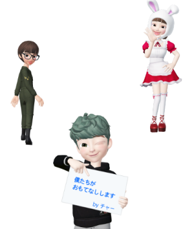
うちのお店がやってないのでくーさんは良さそうなお店を探してたんですって。
そうしたらうさちゃんの女の子が呼び込みをしていて。
思わずついて行ったそうなの。
少し歩くと可愛い男の子が看板を持って立っていて・・・
お店に入ってみたそうよ。
つづく・・・
2019-03-03 00:00
nice!(80)
コメント(29)

カフェオレ色の梅吉

梅吉 2023年8月10日 永眠


梅吉と出会った譲渡会

犬猫の理由なき殺処分ゼロ
妄想広告
UMEKICHI 光

爆発的に早い！
時々攻撃的！
Thanks to Mr.Boss365
爆発的に早い！
時々攻撃的！
Thanks to Mr.Boss365

梅吉さんのヒモの喰いつき顔がいいっ! いつもながらちぃおっと様のお花プレゼントも素敵ですね。ビールのZEPETOラベルはとっても可愛いです~。
by zombiekong (2019-03-03 00:25)
ニャンは蛇が苦手なハズですけど
紐は平気みたいで良く遊びますね＾＾
by ぽちの輔 (2019-03-03 05:53)
クン活にはげむ梅吉さん♪
春をいっぱい感じみたいですね(^-^)
ブーケのプレゼント！
素敵です。
リボンに大喜びで
こんなに遊んでくれると
嬉しいですね(*´Д`*)
by きぃ (2019-03-03 06:40)
梅吉くん、ヒモスキーなのですねぇー。楽しそう。
ブーケもステキ。うちのパートナーは、花を買ったことがないといって、全然買ってくれないの(;_;) いいなぁ。
ビールもいいですねー。
お、ここでもZEPETO妄想劇場が。ちぃママシリーズかしらーー？
by ChatBleu (2019-03-03 09:41)
こんにちは。
梅吉くん、テラスで伸び伸び散策？な感じでいいです！！
◯◯回の結婚記念日！！早いですが・・・おめでとうです。
ブーケプレゼント！！おとーさん！！ナイスです。
グリーンのグラデーションが今の季節感にフィット・センス良いですね。
ZEPETO！！新婚カップル・結婚式の引き出物みたいですね？
ZEPETO物語、くーさん？展開が読めない・・・！？(=^･ｪ･^=)
by Boss365 (2019-03-03 11:44)
わたしもこの配色の花好きだな〜^^
梅吉くん、さすが高級品の紐への食いつきすごいね！！
違いの分かる男だね(笑)
だんなさまのアバターｗｗ
似てるとおもう！！
最初、ほんとに作ったのかと思ったよ^^
こちらの妄想劇場はどんな展開になるのかな？？？
by リュカ (2019-03-03 13:07)
結婚記念日おめでとう！！この季節なんだね！！
ブーケ、とっても綺麗です〜♪
梅吉さんにもってトコがあるツボりました(๑˃̵ᴗ˂̵)
この高級品はたまりませんな〜www
梅吉しゃま堪能出来ましたか？
そしてくーさん…何者なんでしょうか…楽しみにしてます(^m^)
by くつしたにゃん (2019-03-03 13:21)
ビールのラベルアレンジ可愛いね
引出物でオリジナルラベルの日本酒をもらいました 中身は速攻でなくなりましたが、瓶は捨てられず 5年過ぎた頃 お二人が仲良しなので 処分しました(^^)
by チャー (2019-03-03 13:23)
春にナチュラルグリーンのブーケが素敵♪
だくさんの小花はビバーナムでしたっけ？？可愛らしいです(#^^#)
梅吉さんも高級ヒモに大興奮の様子、ニャンコには本体より箱、ヒモですよね^^;
ZEPETOビアラベルも楽しい！！
梅吉さんもちゃ～んとカメラ目線、親孝行だにゃ(^_-)-☆
by ゆきち (2019-03-03 14:27)
ちぃさん こんにちは
梅吉ちゃん いろいろと楽しんでいるのですね。どの姿もかわいいです。
薄緑の配色のブーケ魅力的です。
by SORI (2019-03-03 16:28)
ゴージャスな花束に梅吉さんが狂喜乱舞する高級紐=(^.^)=
夫さん、niceなプレゼントですねぇ♪( ´▽｀)
くーさん、これからどんな店に行かれるのか
興味津々です＾＾
by ニッキー (2019-03-03 16:50)
梅吉さん、暖かくなってきたのでベランダでの活動楽しんでいますね！
お祝いのブーケお洒落な感じで良いですね(^^)
by ma2ma2 (2019-03-03 18:14)
暖かくなって、梅吉さんも動きが活発になってきましたね。
結婚記念日間近、おめでとうございますっ！
オーダービール・ラベル、いいですね。^^)
by yes_hama (2019-03-03 22:22)
梅吉くんのベランダ活動が楽しい季節になりましたね。
春の足音が聞こえてきたかな？もうすぐそこまで来てるかな？
結婚記念日おめでと～♪なんて素敵なブーケ。
毎年お花を贈ってくれるご主人。いいな～。家はないな～。
ビールのラベルも！めっちゃ仲良し家族じゃないですか！
顔寄せ合っちゃって可愛い～っ(≧▽≦)
してみたいけど色んな意味で家は無理～～ｗ
by emi (2019-03-03 23:00)
ちぃママさんになってお店を開いたんですね。
そういう所は縁があまりないです。
行ってみたい＾＾
by riverwalk (2019-03-03 23:40)
梅吉さん、楽しんでますね。
by ニコニコファイト (2019-03-04 07:27)
結婚記念日おめでとうございます！
ステキなブーケ(≧∀≦)
そして紐にそんなに興奮するのが笑えるー(≧∀≦)
by よーちゃん (2019-03-04 08:09)
ブーケの配色、素敵！
私も好きだなぁ～！
by yuppie (2019-03-04 13:33)
ブーケ素敵(*^_^*)
梅吉くんひもに興奮してますね！いい顔です(*´ω｀*)
by palpal (2019-03-04 14:27)
春色の日差しが心地良さそうな梅吉さん。
おとーさん、花束素敵です。
我が夫、花束が似合いそうな人ですが、気が利かないです（笑）
配色も良いですね。
好きな色合いです。
夫婦って、不思議と似てきますよね〜
梅吉さんの影の横顔格好良いです（笑）
紐に興奮しているお方だとは思えません（笑）
by kiki (2019-03-04 14:59)
箱の中身はにゃんだろにゃ？（ﾟ□ﾟ）
by 英ちゃん (2019-03-04 17:31)
ベランダ散策、すごく楽しそうに見えます^^
早めなのかな？結婚記念日おめでとうございます！
毎年届くブーケ、嬉しいですね。
ブーケとオリジナルビールを見るのも２回目になります*^^*
by Ja-Kou66 (2019-03-05 00:11)
結婚記念日おめでとうございます♪
このブーケのお花のチョイスはご主人様なのですか？
だとしたらものすごくマニアな感じ(^^
毎年ラベルデザインしているのですか？何本たまりましたか？ふふふ。
梅吉さんもベランダ活動を満喫し春は近いですね。
くーさんを招いているうさぎさんは・・・・もしや(笑
謎が謎を呼ぶ展開ですね。
by marimo (2019-03-05 13:19)
ご結婚記念日おめでとうございます❤
ブーケ、シンプルな色合いがステキです♪
毎年贈ってくださるなんていいですねｗ
あったかくなってくると、お外に出たがりますよね。
春の匂いを満喫できたかな＾＾
買ったオモチャよりもこういうヒモのほうが
喜ばれたりしますよね(笑)
by カトリーヌ (2019-03-05 16:17)
結婚記念日おめでとうございます。
うちも昨年記念日にそれらしき事をしたと思いますが、あまり長すぎて忘れてしまいました(^_^;)
ベランダの梅吉さん、ほんわかして良い感じですね～(^_^)
by kou (2019-03-06 13:30)
結婚記念日おめでとうございます！
春が近づいてきますね～。
チェックに忙しい梅吉さん、紐に猫パンチ楽しそう～＾＾
素敵なブーケ！ この配色いい～私も大好きです＾＾
おっとさんチャーミングですね。え、似た者夫婦？
何が起こっているのかしら～＾＾
by sana (2019-03-06 19:22)
zombiekongさん＞
一部しかアップできませんでしたが
梅吉らしいアホっぽい顔して遊ぶ写真がたくさん撮れました0(≧▽≦)0
ブレてる写真も多かったのですがそれがまた魅力かな、と！
ZEPETOラベル、本当にこれで印刷してもよかったんじゃないかと思いましたよw
永遠に歳をとらない二人〜なんて〜(*>艸<)
ぽちの輔さん＞
先代猫はベルトやカーテンのタッセルなどひょろ長いものが落ちていると
３メートルくらい斜め後方に飛びのいたものです(⌒-⌒;
なんでだろう・・・と思っていたら猫はヘビが苦手なので
ひょろ長いものは本能的に嫌いだって本で読み行動の意味を知りました。
梅吉は本物のヘビでも振り回して遊びそうですけどwww
きぃさん＞
はい＾＾これぞまさしくクン活ですね(*>艸<)
ブーケについてくるリボンや紐は
遊び道具になったり首に巻かれたり・・・
色々活用できる便利アイテムでーす＾＾
ChatBleuさん＞
スキマスキーでヒモスキーですw
ガブリコフでもあるので先祖はロシア系なんでしょうか(*>艸<)
お花、ネットでも買えますよってパートナーさんに！！
ちゃんと雛形＆見本から選べるし。
うちのおっともお店では買ってきません。照れ？
物よりお花の方が確実に喜んでもらえるプレゼントなのに
躊躇する男性が多いのはなせだろう・・・
一度買っちゃえばもう恥ずかしくなんてないのにねー。
などなどと吹き込んでみてください(^_－)☆
ちぃママ、なにげに私が気に入ってしまって(〃▽〃)
Boss365さん＞
寒い時はどんなに誘っても知らん顔だったのに
自分からベランダに行きたいそぶりをするようになりました＾＾
今年初のベランダでくりんくるんも観測されたので
気持ちが良かったようですよ＾＾
ブーケ、お誉めいただいてありがとうございます！
お花屋さんのセンスだと思いますが（笑）
おっとの手柄も大きいと（コメント見てますから）褒めておかなくちゃ(*>艸<)
ZEPETO物語、自分でもどうなるのか予測不能ですw
アバターたちが勝手に暴れ出すのでそれに任せてみようかしら・・・
リュカさん＞
ブーケ、ピンクや赤やオレンジもかわいいなと思うけど
しっくりくるのはこういう配色なの＾＾
家の中があったかいのでお花が傷んでいくのが早いんだけど
頑張って切り戻して玄関に置いたりして長持ちさせまーす！
違いの分かる男、梅吉は新しもの好きでもあるので
紐には大喜びでした。
そしてお花が入ってた段ボールも大喜び(*>艸<)
妄想劇場はラストはなんとなく決まってるんだけど
思惑通りに運ぶかな、と(⌒-⌒;
なんかアバターが勝手に動き出しているように感じる時があるよ・・・
くつしたにゃんさん＞
ヒモ、段ボールはもれなく梅吉のものですからー(*>艸<)
そしてお約束として花瓶も一回倒してくれましたw
いや、私が花瓶を置いた位置が悪かったから・・・（下僕発言w）
くーさんとちぃママはお互い敵対関係にある集団に属していて
そのことにも気づいているんだけど
お店ではあえてそれに触れず個人的にリスペクトしあっているという設定です！
さて、これをどう盛り込みましょうかねぇぇぇぇぇ
そのうちお着替えをお願いするかもです＾＾よろしくー。
チャーさん＞
オリジナルラベルの引き出物・・・捨て時が難しいですが
5年も取っておいたとはお優しい(≧▽≦)
それだけ大事に保管していて
仲良しのお二人ならわだかまりなく捨てられますね！
うちのビールは自分たちだけで飲んで処分しまーす(^_－)☆
ゆきちさん＞
まさしくビバーナムです＾＾
今年のブーケのメインのお花だなと思って見ていました。
色をうまく出すのが難しい（運任せ）ですが
もう少し楽しんだらドライフラワーにしようと思っています！
梅吉大興奮の高級ヒモと高級段ボールは
この日以降片付けることが出来ずにおります(⌒-⌒; )
今年のビアラベルは梅吉の顔がちゃんと正面を向いていて
二人が酔っ払っていないという貴重なものになりました0(≧▽≦)0
SORIさん＞
猫はなんでもおもちゃにする天才ですから
ヒモも花が入っていた箱もおもちゃとして楽しんでくれました＾＾
薄緑の配色のブーケはこれからの新緑の季節が予感できるかな、
と思っています！
ニッキーさん＞
はい＾＾みんながニコニコ嬉しいプレゼントでした(≧▽≦)
最後はちゃんとお花を生けた花瓶を倒してくれる
お約束までついてきて・・・w
ZEPETO劇場お付き合いいただいてありがとうございますm(_ _)m
くーさんの行くお店は日本の未来に大きく貢献するお店かもしれません！
大人のおふざけ、もう少しお付き合いくださいませ＾＾
ma2ma2さん＞
寒い時はベランダに誘っても無視されましたが（笑
最近は一緒に行ってくれるようになりましたよ＾＾
ブーケ、お褒めいただきありがとうございます！
by ちぃ (2019-03-06 20:36)
yes_hamaさん＞
暖かくなると活発になって益々いたずらが増えそうですw
ビールのラベルは毎年代わり映えしない構図なんですが
（人間二人と真ん中に梅吉）
定点観測みたいでいいかなって思ってます(*>艸<)
emiさん＞
暖かくなって自分からベランダに行きたいって言うようになりました＾＾
寒い時には無理に出すと「わし！いえにはいるー！」と
ドアの前で絶叫していたのにw
空気の変化、気温の変化敏感に感じているみたい。
ビールのラベル、顔寄せないと雛形のフレームに収まらないの(*>艸<)
毎年同じポーズ＆構図なので定点観測みたいになってきたよーw
emiさんちは２わん・２にゃんバージョンが出来そうだね(^_－)☆
riverwalkさん＞
ちぃママのお店は気が向いたら営業してます(≧▽≦)
ママ本人もそう言うお店には行ったことないので
いわゆる普通のお店とは違って楽しいかもしれませんよ♪
ニコニコファイトさん＞
ヒモ、大ウケでしたー！
買ったおもちゃより喜ぶなんてwww
よーちゃん＞
おっと、なかなかやるでしょう？0(≧▽≦)0
梅吉、ヒモに大変喜んでおりましたw
でも一番好きなのは私のパジャマのズボンのヒモー！
よる寝ぼけ眼でトイレに行こうとしたら
ヒモめがけて飛びついてくるので（ヒモ、縛ってませんw）
心底びっくりしますwww
yuppieさん＞
ありがとうございまーす！
評判良くっておっともニコニコです＾＾
palpalさん＞
なんたってヒモスキーですからねー＾＾
それに新しいとくれば興奮必至www
（新しもの好き）
kikiさん＞
いただいたコメントを読んで「影の横顔？」って
しばらく考えて写真を何度も見てやっと気づきました！
おっとが「kikiさんすごい！」と言っておりましたよ。
横顔の影が良いな、とシャッターを切ったそうです。
おっとはみなさんにブーケを褒めてもらってニコニコですよ0(≧▽≦)0
by ちぃ (2019-03-07 16:29)
英ちゃんさん＞
お花を出した後は
にゃんこが飛び出るびっくり箱ですにゃw
Ja-Kou66さん＞
お久しぶりのベランダだったのでウキウキですよ＾＾
この直前には今シーズン初のくりんくるんも見られました！
（コンクリートがぬくくないとやりません）
そうそう！このビールJa-Kou66さんもオーダーされてましたよね。
次回のご予定は？？
marimoさん＞
それとなく「こんな色合いが好き！」と言うのは
日常生活で伝えておりますw
もともと好みも似ているのですけどおっとGJという事で0(≧▽≦)0
（コメント見ているから盛大に褒めちゃおう）
ビールの空き瓶は今６本ありますがその前にオーダーしたラベルは
ワインのエチケット用のシールで剥がして取りました。
ってあのシールのアルバムどこいっただろう (-_-メ)
ZEPETO劇場、また画像をお借りするかもしれません！
marimoアーカイブ、頼りにしてます＾＾
カトリーヌさん＞
ブーケは結婚以来恒例となっております＾＾
私も喜ぶし毎年悩まなくて良いので（笑）デフォルトです。
でも日常ではちょっとしたお花は買っても
ブーケは自分では買わないので嬉しいでーす。
梅吉はベランダ大好きでもっと暖かくなると
自分から「こっちやでー！」とベランダに出るドアに誘導しますw
寒い時に無理に外に出すと「はいるー！！」とドアの前でギャン鳴きです(⌒-⌒;
おもちゃ、一番喜ばれるのはレジ袋を丸めたものですwww
kouさん＞
長すぎでもちゃんと「それらしい事」を（笑）なさるのは
素敵な事ですよー＾＾
今後もそれらしい事をさりげなく、ですね！
ベランダに出た日は暖かかったので
梅吉も気持ちが良かったようです。
sanaさん＞
お祝いのお言葉ありがとうございます＾＾
めまぐるしくお天気の変わるこの頃ですけど
確実に春は来ていますよね。
我が付近は今は沈丁花とお相撲さんの瓶付け油の香りがしています！
似た者夫婦、私の教育が良かったのでしょうか。
良い方向に向かっているようです(*>艸<)
by ちぃ (2019-03-07 20:20)